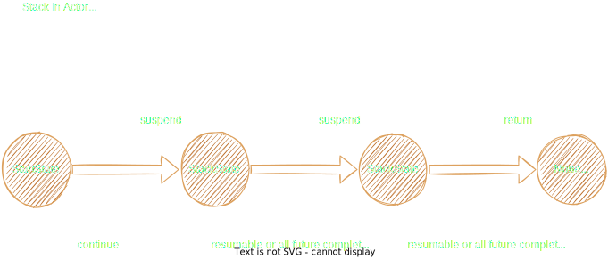
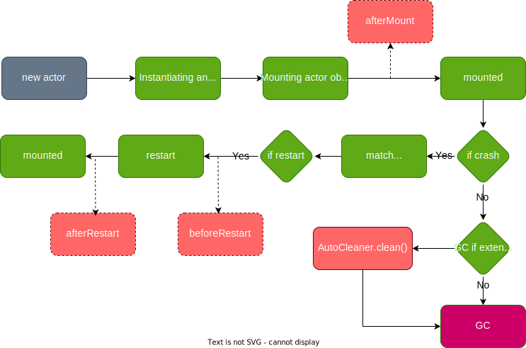
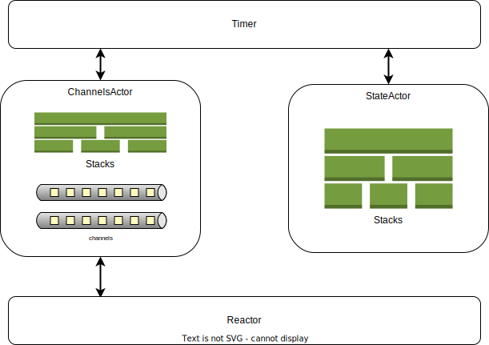

环境要求
otavia 虽然主要运行在JVM平台上，但是为了保证可靠的编译时类型安全，目前只支持 Scala 3, 如果您对 Scala 3 不是很熟悉，您可以参考以下资料进行学习。
- 基础知识（对于学习
otavia足够了）: Scala 3 Book - 高级知识：Scala 3 Language Reference
以下部分示例的源码可以在 otavia-examples 中找到。
添加依赖
如果您使用 sbt , 请添加以下依赖，其中 version =

libraryDependencies += "cc.otavia" %% "otavia-runtime" % "{version}"
libraryDependencies += "cc.otavia" %% "otavia-codec" % "{version}"
如果您使用 mill：
ivy"cc.otavia::otavia-runtime:{version}"
ivy"cc.otavia::otavia-codec:{version}"
如果使用 maven:
<dependency>
<groupId>cc.otavia</groupId>
<artifactId>otavia-runtime</artifactId>
<version>{version}</version>
</dependency>
<dependency>
<groupId>cc.otavia</groupId>
<artifactId>otavia-codec</artifactId>
<version>{version}</version>
</dependency>
简单的 Ping-Pong Actors
这个简单的示例定义了两个 Actor: PingActor 和 PongActor, PingActor 接收 Start 消息，然后向 PongActor 发送 Ping 消息， 每个发送的 Ping 消息都必须接收一个 Pong 类型的回复消息。
定义消息
根据以上描述，我们需要3种消息，而这也正是 otavia 3种基本的消息类型。Start 消息是一种 Notice 消息， Notice 消息是 otavia 中一种不需要获得回复的消息，只要有 Actor 的地址， 您就可以向 Actor 发送 Notice 消息；Ping 是一种 Ask 消息，这种消息必须关联一种回复消息，如果一个 Actor 向 其他 Actor 发送了这种消息，就意味着其必须收到一个回复消息（有点像方法定义中的方法参数）；Pong 是一种回复消息， 回复消息有点像方法定义中的返回值。
Start 消息是 Notice 类型，所以必须继承 Notice trait
case class Start(sid: Int) extends Notice
Pong 必须继承 Reply trait, Ping 是 Ask 类型的消息，所以必须继承 Ask trait。 Ask trait 带有一个类型约束， 用来描述这个 Ask 消息期望获得的回复的消息类型。
case class Pong(pingId: Int) extends Reply
case class Ping(id: Int) extends Ask[Pong]
实现 Actor
有了消息之后，我们来定义我们的 Actor。
首先我们确定我们的 Actor 能接收的消息类型，因为 otavia 是一种消息类型安全的 Actor 编程框架，所以我们先来确定每种 Actor 能接收的消息类型： PingActor 能接收 Start 消息和 Pong 消息，PongActor 接收 Ping 消息并且回复 Pong 消息。因为在 otavia 中回复消息通过 Ask 消息进行约束，所以在 Actor 的定义中就不需要对这种消息进行约束，由 于 PingActor 需要给 PongActor 发送消息，所以 PingActor 需要知道 PongActor 的地址。 大概能定义出我们 的 Actor 的类及泛型参数如下：
final class PongActor() extends StateActor[Ping] {
// ...
}
final class PingActor(pongActorAddress: Address[Ping]) extends StateActor[Start] {
// ...
}
这里出现了 StateActor 我们暂时可以先不用管，otavia 中的最终 Actor 必须继承 StateActor 或 ChannelsActor， ChannelsActor 是用于处理 IO 的 Actor , 其余所有的 Actor 都是 StateActor。
接下来让我们来实现具体的消息处理吧！
首先是 PingActor , 他需要处理 Start 消息，并且处理过程中需要发送 Ping 消息，然后等待 Pong 回复消息，最后结束 Start 消息的处理。
final class PingActor(pongActorAddress: Address[Ping]) extends StateActor[Start] {
override def resumeNotice(stack: NoticeStack[Start]): Option[StackState] = stack.state match {
case _: StartState =>
println("PingActor handle Start message")
println("PingActor send Ping Message")
val state = FutureState[Pong]()
pongActorAddress.ask(Ping(stack.notice.sid), state.future)
state.suspend()
case state: FutureState[Pong] =>
val future = state.future
if (future.isSuccess) {
println(s"PingActor received ${future.getNow} message success!")
assert(future.getNow.pingId == stack.ask.sid)
}
stack.`return`()
}
}
resumeNotice 是 Actor 处理 Notice 消息的入口，从其他地方发送来的 Notice 消息都会通过这个方法传入 Actor, 接下来我们来实现 PongActor, PongActor 接收 Ping 这种 Ask 消息，然后回复一个 Pong 消息：
final class PongActor() extends StateActor[Ping] {
override def resumeAsk(stack: AskStack[Ping]): Option[StackState] = {
println(s"PongActor received ${stack.ask} message")
println(s"PongActor reply ${stack.ask} with Pong message")
stack.`return`(Pong(stack.ask.id))
}
}
resumeAsk 是 Actor 处理 Ask 消息的入口。从其他 Actor 发送来的 Ask 消息都会从这个方法传入 Actor。
我们可以发现， Actor 的 resumeXXX 方法并不是直接将消息作为参数，而是将消息装入 Stack 中一起作为参数：Notice 消息装入 NoticeStack 中，Ask 消息装入 AskStack 中。 与大多数其他 Actor 编程框架不一样，otavia 中消息的发送和接收都被严格的管理， 这虽然丧失了一部分灵活性，但是却保证了发送消息和接收消息的编译时类型安全，并且让发送消息和接收消息的过程更加类似于方法的调用。我们来看看 我们是怎么样发送消息和接收消息的吧：
- 使用
Address的notice方法发送Notice消息，调用notice方法会立即返回。notice方法没有返回值。 - 使用
Address的ask方法发送Ask消息，同时ask方法需要传入一个Future。当Actor接收到与这个Ask消息关联的Reply消息的时候，这个Reply消息就会被放入Future中，同时Future的状态会被设置为完成。 Future只能关联到一个StackState，但是StackState可以关联多个Future。- 一个
Stack只能拥有一个StackState。当resumeXXX方法结束时，如果返回值为Some(StackState)， 就将这个StackState设置为Stack的当前状态，同时释放老的StackState及其关联的Future。 Future完成的时候会通过StackState检查与其关联的Stack是否可以再次被resumeXXX方法执行。当StackState的resumable方法返回ture或者关联的所有的Future都达到完成状态的时候与其关联的Stack就可以再次被执行。StackState由开发者自定义，resumable方法可以被重写。当然otavia预定义了一些常用的StackState，比如示例中 使用的FutureState。StackState提供了suspend方法返回Option[StackState]。- 当
Actor处理Notice消息或者Ask消息的时候，就将消息装入一个新建的Stack中，并且将Stack的StackState设置为一个特殊的值StackState.start，然后将Stack传递给resumeXXX方法开始执行。StackState.start是一个类型为StartState的特殊StackState，其不关联任何Future并且resumable方 法返回ture。 Stack使用return方法结束与其绑定消息的处理，所以return方法返回值为None。对于AskStack，return需要一个Reply消息作为参数发送给Ask消息的发送者作为Ask消息的回复消息。
以上一切消息的发送和接收都是编译时类型安全的！一个 Stack 只能有一个 StackState，其初始的状态为 StartStack， 每次 resumeXXX 执行完成就切换到一个新的 StackState, 最后的 return 方法将返回 None，代表 Stack 完成！

虽然上诉过程看起来比较复杂，但是这些步骤大多数都不需要开发者直接完成。开发者实现 resumeXXX 方法的时候，只需要对 Stack 的 StackState 进行模式匹配 ，然后执行对应的业务逻辑。如果有需要等待异步消息，就返回一个新的 StackState ，否则使用 return 方法结束 Stack。
至此，我们需要的所有的 Actor 和消息都已经完全实现了。接下来，启动一个 ActorSystem 来运行这些 Actor 吧
运行 Actor
@main def run(): Unit = {
val system = ActorSystem()
val pongActor = system.buildActor(() => new PongActor())
val pingActor = system.buildActor(() => new PingActor(pongActor))
pingActor.notice(Start(88))
}
通过 ActorSystem() 我们就可以轻松创建一个 ActorSystem, ActorSystem 是 otavia 中 Actor 的运行时容器， 一个 JVM 实例只允许启动一个 ActorSystem 实例。通过 ActorSystem 的 buildActor 方法，我们可以实例化我们定义的 Actor ， buildActor 方法并不会返回 Actor 实例对象本身，相反他返回的是一个代表 Actor 的地址，我们可以通过这个 地址发送 Actor 能处理的消息。
以上的一切都是编译时类型安全的，如果您向 buildActor 返回的地址发送 Actor 不能处理的消息，这将不能通过编译。如果您使用 AskStack 的 return 方法返回与 Ask 消息不匹配的 Reply 消息，这也将不能通过编译。
接收多种类型消息的 Actor
以上的示例演示了处理一种消息类型的 Actor， 但是在真实的场景中我们往往需要在一个 Actor 中处理多种类型的消息。这在 Scala 3 中非常简单，而且由于 Scala 3 强大的 Union Types 和 Intersection Types，我们还可以做到处理多种 消息的编译时类型安全。
假如我们需要实现一个 Actor， 这个 Actor 的行为为：接收 Hello 消息并且返回 World 消息， 接收 Ping 消息并且 返回 Pong 消息， 接收 Echo 消息不返回任何消息。那么我们可以先定义消息的类型：
case class Echo() extends Notice
case class World() extends Reply
case class Hello() extends Ask[World]
case class Pong() extends Reply
case class Ping() extends Ask[Pong]
然后来实现我们的 Actor：
final class MultiMsgActor() extends StateActor[Echo | Hello | Ping] {
override def resumeNotice(stack: NoticeStack[Echo]): Option[StackState] = {
println("MultiMsgActor received Echo message")
stack.`return`()
}
override def resumeAsk(stack: AskStack[Hello | Ping]): Option[StackState] = {
stack match {
case stack: AskStack[Hello] if stack.ask.isInstanceOf[Hello] => handleHello(stack)
case stack: AskStack[Ping] if stack.ask.isInstanceOf[Ping] => handlePing(stack)
}
}
private def handleHello(stack: AskStack[Hello]): Option[StackState] = {
println("MultiMsgActor received Hello message")
stack.`return`(World())
}
private def handlePing(stack: AskStack[Ping]): Option[StackState] = {
println("MultiMsgActor received Ping message")
stack.`return`(Pong())
}
}
你可能会想，要是一个消息同时继承了 Notice 和 Ask，这个消息最终是被 resumeNotice 还是 resumeAsk 处理呢？ 答案是都有可能。otavia 不是根据消息的种类来决定其应该被怎么处理，而是通过消息的发送方式。Address 中有 notice 和 ask 方法，以 notice 方法发送的消息最终被 resumeNotice 处理， ask 方法发送的消息被 resumeAsk 处理！
计时
otavia 运行时包含了一个强大的计时器组件 Timer ，您可以使用多种方式与 Timer 进行交互，以下将介绍主要的使用场景：
处理注册的定时事件
Actor 可以通过 Timer 的 registerActorTimeout 方法注册一个超时事件触发任务。当达到超时条件时，Timer 会生成一个 TimeoutEvent 并且发送给注册的 Actor。然后超时事件会通过 Actor 的 handleActorTimeout 方法进行处理。
final class TickActor() extends StateActor[Nothing] { // [Nothing] if no message need process!
private var onceTickId: Long = Timer.INVALID_TIMEOUT_REGISTER_ID
private var periodTickId: Long = Timer.INVALID_TIMEOUT_REGISTER_ID
override protected def afterMount(): Unit = {
onceTickId = timer.registerActorTimeout(TimeoutTrigger.DelayTime(1, TimeUnit.SECONDS), self)
periodTickId = timer.registerActorTimeout(TimeoutTrigger.DelayPeriod(2, 2, TimeUnit.SECONDS, TimeUnit.SECONDS), self)
}
override protected def handleActorTimeout(timeoutEvent: TimeoutEvent): Unit = {
if (timeoutEvent.registerId == periodTickId) {
println(s"period timeout event triggered at ${LocalDateTime.now()}")
} else if (timeoutEvent.registerId == onceTickId) {
println(s"once timeout event triggered at ${LocalDateTime.now()}")
} else {
println("Never run this")
}
}
}
值得注意的是 Actor 对象内 timer 方法的使用必须在 Actor 挂载到 ActorSystem 之后，只有挂载之后，运行时相关的信息才 会被注入到 Actor 实例内。所以您不能在 Actor 对象的构造器内直接使用 timer 方法，因为这个时候 Actor 实例还没有挂载 到 ActorSystem 中，使用运行时相关的方法都会导致空指针异常。这在后文的 Actor 生命周期中有介绍。
Stack Sleep
如果我们想让一个 Stack 等待一段时间才开始执行，我们可以让 StackState 关联到一个 MessageFuture[TimeoutReply] , 这个 Future 会将超时事件作为结果。只有收到超时事件的时候，MessageFuture[TimeoutReply] 才完成。
在之前的示例中，PingActor 处理 Start 消息的时候使用了 FutureState , 这是 otavia 定义的一些比较常用的状态类，如果 这些状态类不能满足您的需要，您也可以自定义 StackState。
让我们改造一下之前的 PingActor，现在我们要求这个 Actor 收到 Start 消息之后发送 Ping 请求，然后收到 Pong 消息 的时候还需要等待2秒才能继续调度这个 NoticeStack 执行。
现在 FutureState 已经不能满足我们的需求了，因为其只绑定了一个 MessageFuture[Pong], 现在我们不仅需要绑定 MessageFuture[Pong]，还需要绑定 MessageFuture[TimeoutReply]，只有这两个 Future 都完成的时候才开始执行这个 Stack。让我们来定义我们新的 StackState 吧。
class PongTimeoutState extends StackState {
val pongFuture = MessageFuture[Pong]()
val timeoutFuture = MessageFuture[TimeoutReply]()
}
接下来，重新实现我们的 PingActor
final class PingActor(pongActorAddress: Address[Ping]) extends StateActor[Start] {
override def resumeNotice(stack: NoticeStack[Start]): Option[StackState] = stack.state match {
case _: StartState =>
println("PingActor handle Start message")
println("PingActor send Ping Message")
val state = PongTimeoutState()
pongActorAddress.ask(Ping(stack.notice.sid), state.pongFuture)
timer.sleepStack(state.timeoutFuture, 2 * 1000)
state.suspend()
case state: PongTimeoutState =>
val future = state.pongFuture
if (future.isSuccess) {
println(s"PingActor received ${future.getNow} message success!")
assert(future.getNow.pingId == stack.ask.sid)
}
stack.`return`()
}
}
好了，完成了！现在我们的 PingActor 即使收到 Pong 回复消息，也要等待2秒这个 Stack 才会被继续调度执行。
给 Reply 消息设置超时
有时候，当我们发送一个 Ask 消息，对面的 Actor 可能会耗时比较久，但是我们不想让我们的请求 Actor 等待太久，这种情况我们 怎么办呢？也许聪明的您已经想到答案了！之前我们讲过：
一个
StackState可以关联一个或者多个Future, 只有当StackState的resumable方法为ture或者关联的所 有的Future都达到完成状态的时候，这个Stack才可以继续被调度执行。
所以我们可以重载 StackState 的 resumable 方法！ 现在来重新定义一下我们 PongTimeoutState
class PongTimeoutState extends StackState {
val pongFuture = MessageFuture[Pong]()
val timeoutFuture = MessageFuture[TimeoutReply]()
override def resumable(): Boolean = timeoutFuture.isDone
}
现在只要 timeoutFuture 完成，那么 Stack 就可以重新执行了。不过当我们使用 pongFuture 时需要通过 pongFuture.isDone 检测其是否完成。这的确是一种方法，但是考虑到这是一种比较常见的需求，otavia 提供了更简单的方法，我们只需对最开始的 PingActor 进行一点点微小的改动：
final class PingActor(pongActorAddress: Address[Ping]) extends StateActor[Start] {
override def resumeNotice(stack: NoticeStack[Start]): Option[StackState] = stack.state match {
case _: StartState =>
println("PingActor handle Start message")
println("PingActor send Ping Message")
val state = FutureState()
pongActorAddress.ask(Ping(stack.notice.sid), state.future, 2 * 1000)
state.suspend()
case state: FutureState[Pong] =>
val future = state.future
if (future.isSuccess) {
println(s"PingActor received ${future.getNow} message success!")
assert(future.getNow.pingId == stack.ask.sid)
}
stack.`return`()
}
}
注意到不同的地方了吗！ask 方法自带了一个超时参数!
pongActorAddress.ask(Ping(stack.notice.sid), state.future, 2 * 1000) // new
pongActorAddress.ask(Ping(stack.notice.sid), state.future) // old
如果2秒后仍然没有收到 Pong 消息，那么这个 Future 将会被设置成完成状态，但是与之前不同的是我们不能从 Future 里面拿到 Pong 消息了，他的状态已经是失败了，即 isDone=ture isSuccess=false isFailed=ture。因为这个 StackState 只关联 了一个 Future，而这个 Future 已经是完成状态了，所以这个 Stack 就可以继续被调度执行了。
Actor 的生命周期
在 otavia 中，用户不用花太多心思管理 Actor 的生命周期，Actor 实例仍然被 JVM 垃圾回收管理。只要这个 Actor 不再被 GC 根对象引用，那么这个 Actor 实例将被 JVM 的垃圾回收系统自动回收。Actor 里有如下几种钩子方法可以在不同的生命周期过程中调用
afterMount:Actor实例挂载到ActorSystem之后调用，**对于 Actor 实例context相关的方法只有挂载之后才可以使用 **。beforeRestart: 重启之前调用。restart: 重启Actor实例的方法。afterRestart: 重启之后调用。AutoCleanable.cleaner: 如果您实现的Actor需要清理一些不安全的资源，继承AutoCleanabletrait 然后实现cleaner方法。
以下图片显示了 Actor 实例的生命周期：

我们来定义一个 Actor 看看生命周期中的各种钩子方法吧：
case class Start() extends Notice
final class LifeActor extends StateActor[Start] with AutoCleanable {
override protected def afterMount(): Unit = println("LifeActor: afterMount")
override protected def beforeRestart(): Unit = println("LifeActor: beforeRestart")
override protected def restart(): Unit = println("LifeActor: restart")
override protected def afterRestart(): Unit = println("LifeActor: afterRestart")
override def cleaner(): ActorCleaner = new ActorCleaner {
println("creating actor cleaner")
override protected def clean(): Unit = println("clean actor resource before actor stop")
}
// if occurs some error which developer is not catch, this will trigger the actor restart
// you can also override the noticeExceptionStrategy method to change the strategy
override def resumeNotice(stack: NoticeStack[Start]): Option[StackState] = {
println("process message")
throw new Error("")
}
}
其中 afterMount 方法最主要用来进行依赖注入，关于依赖注入，后文会进行详细讲解。
处理IO
现在我们已经学会了 1)定义 Actor 2)定义消息 3)发送消息 4)接收消息处理消息 5)使用 Timer 触发超时。
但是在真实的业务中，我们往往需要处理很多 IO 任务，而 IO 任务又时常阻塞我们的线程，这也是导致我们的程序性能底下的原因之一。与此同时， 一些新的技术比如 epoll 、io_uring 等蓬勃发展，这使得我们可以不阻塞地处理 IO 任务。 JVM 中也提供了 NIO 来支持网络 IO ，但是 想要使用好 NIO 并不容易，因为 JVM 提供的 java.nio.ByteBuffer 和 java.nio.channels.Channel 等 API 太底层。 目前在 JVM 里更常见的是使用 Netty 来处理IO任务。
感谢 Netty 为 JVM 领域提供的强大的 IO 编程工具！受 Netty 启发，otavia 中的 IO 模块基本从 Netty 移植而来！ 在 otavia 中处理 IO 任务跟在 Netty 中非常像，可以说基本保持了 API 的一致。这也极大的方便了 otavia 从广泛的 Netty 生态系统中吸收营养，移植各种网络协议的编解码代码。查看 otavia 生态。

otavia 同样使用 Channel 代表一个 IO 对象，比如一个打开的文件、一个网络连接。但是在 otavia 中，Channel 必须运行 在 ChannelsActor 中。同样 Channel 中也包含了一个 ChannelPipeline 组件，其中有一个 ChannelHandler 队列。

为了更好的对各种不同 Channel 的管理，otavia 实现了几种不同种类的 ChannelsActor，他们分别是：
AcceptorActor: 管理监听TCP连接的Channel，其需要实例化一组AcceptedWorkerActor, 对于监听Channel接受的普通Channel，会作为消息发送给其中一个AcceptedWorkerActor, 并且由AcceptedWorkerActor对接受的Channel进行管理 和数据的处理。AcceptedWorkerActor:AcceptorActor的工作Actor。SocketChannelsActor: 管理 TCP 客户端Channel。DatagramChannelsActor: 管理 UDPChannel。
您需要根据需求选择一种类型的 ChannelsActor 进行实现。现在，让我们从一个简单的文件读取的例子开始我们的旅程！
文件IO
Netty 只支持网络 IO，otavia 不仅支持网络而且还支持文件。现在我们要实现一个 Actor， 他接收一个读取文件请求，然后将文件以 Seq[String] 的方式返回。
首先，让我们来定义这个 Actor 需要处理和返回的消息
case class LinesReply(lines: Seq[String]) extends Reply
case class ReadLines() extends Ask[LinesReply]
接下来我们来实现我们的 Actor，这个 Actor 有怎么样的行为呢？首先需要打开文件！这样我们就有了代表这个文件的 Channel, 然后我们将读文件的命令发送给这个 Channel
final class ReadLinesActor(file: File, charset: Charset = StandardCharsets.UTF_8)
extends ChannelsActor[ReadLines] {
override protected def initFileChannel(channel: Channel): Unit = ???
override def resumeAsk(stack: AskStack[ReadLines]): Option[StackState] = {
stack.state match {
case StackState.start =>
openFileChannelAndSuspend(file, Seq(StandardOpenOption.READ), attrs = Seq.empty)
case openState: ChannelFutureState if openState.id == 0 =>
val linesState = ChannelFutureState(1)
openState.future.channel.ask(FileReadPlan(-1, -1), linesState.future)
linesState.suspend()
case linesState: ChannelFutureState if linesState.id == 1 =>
stack.`return`(LinesReply(linesState.future.getNow.asInstanceOf[Seq[String]]))
}
}
}
首先我们使用 openFileChannelAndSuspend 打开文件并且返回一个 StackState 状态，文件打开完成的时候这个状态就达到可运 行状态。其个方法是 ChannelsActor 提供的一个快捷方法，我们可以查看源码，其实现为：
// source code from ChannelsActor
val channel = createFileChannelAndInit()
val state = ChannelFutureState()
val future: ChannelFuture = state.future
channel.open(path, opts, attrs, future)
state.suspend().asInstanceOf[Option[ChannelFutureState]]
没什么特别的，跟我们之前讲过的 Stack 的执行过程差不多，只不过这里的 StackState 是 ChannelFutureState , 关联的 Future 是 ChannelFuture, 然后使用 channel.open 将这个 Future 传给 Channel。open 不是阻塞的，调用后就会立即返回。如果 这个文件真的打开完成，那么 Reactor 就会向 ChannelsActor 发送一个 ReactorEvent, ChannelsActor 收到事件后会将 这个 ChannelFuture 设置成完成状态。然后判断与其关联的 Stack 是否可以重新执行。
这里我们还看见了一个 createFileChannelAndInit 方法，从方法名称我们就可以猜测出这个方法创建了一个文件 Channel，并且还对 这个 Channel 进行了初始化。 这个方法会调用 ChannelsActor.initFileChannel 方法对 Channel 进行初始化。
现在我们可以来实现我们的 ReadLinesActor.initFileChannel 了。我们可以看见我们在文件打开之后传入了一个 FileReadPlan 对象：
val linesState = ChannelFutureState(1)
openState.future.channel.ask(FileReadPlan(-1, -1), linesState.future)
这个 ask 方法最终会将 FileReadPlan 通过 Channel 的 write 方法传入 ChannelPipeline。 ChannelPipeline 里面的 ChannelHandler 是我们自己实现的，这跟 Netty 基本一样。
现在我们来实现我们的 ChannelHandler 吧。这个 ChannelHandler 需要实现哪些功能呢？首先我们要能处理 write inbound 事件， 其次，我们需要对 channelRead outbound 事件进行处理；然后读文件完成的时候我们要处理 channelReadComplete outbound 事件， 在 channelReadComplete 事件中，我们需要生成最终的结果消息返回给我们的 ReadLinesActor。
class ReadLinesHandler(charset: Charset) extends ByteToMessageDecoder {
private val lines = ArrayBuffer.empty[String]
private var currentMsgId: Long = -1
override def write(ctx: ChannelHandlerContext, msg: AnyRef, msgId: Long): Unit = msg match {
case readPlan: FileReadPlan =>
ctx.read(readPlan)
currentMsgId = msgId
case _ =>
ctx.write(msg, msgId)
}
override protected def decode(ctx: ChannelHandlerContext, input: AdaptiveBuffer): Unit = {
var continue = true
while (continue) {
val length = input.bytesBefore('\n'.toByte) + 1
if (length > 0) {
lines.addOne(input.readCharSequence(length, charset).toString)
} else continue = false
}
}
override def channelReadComplete(ctx: ChannelHandlerContext): Unit = {
val seq = lines.toSeq
lines.clear()
val msgId = currentMsgId
currentMsgId = -1
ctx.fireChannelRead(seq, msgId)
}
}
然后我们还需要将这个 ReadLinesHandler 添加到我们的 Channel 的 ChannelPipeline 中，还记得我们之前在 ReadLinesActor 中没有实现的 initFileChannel 方法么。现在我们可以完成这个方法了！
override protected def initFileChannel(channel: Channel): Unit =
channel.pipeline.addFirst(new ReadLinesHandler(charset))
我们可以注意到我们实现的 write 方法有一个 msgId 参数，这是 ask 方法生成的 Channel 内唯一的消息编号，因为 write 方法是非阻塞的，其并不会等待底层的IO完成直接拿到结果，而是直接通过 ChannelHandlerContext.read 向 Reactor 提交一个读 数据的计划，这个读数据的具体IO工作在 otavia 中会由 Reactor 完成，读到的数据会以 Event 的方式发送给 ChannelsActor。 然后 ChannelsActor 会将 Event 分发给具体的 Channel， Channel 会通过 channelRead 以 outbound 方向在 ChannelPipeline 中传播。这里我们继承的是 ByteToMessageDecoder ，他的 channelRead 方法会调用 decode 方法， 这个方法主要用于将字节序列转换成我们需要的对象。当 Reactor 读取数据完成，也会向 ChannelsActor 发送 Event，相对应的， 这种事件将会转换成 channelReadComplete outbound 事件在 ChannelPipeline 传播。我们需要在我们的 ReadLinesHandler 重写 channelReadComplete 方法以生成最终的结果并继续将结果以 channelRead 继续向 outbound 方向传播。注意到了么，我们 fireChannelRead 的方法同时也有一个 msgId 参数，这个参数会让这个消息最终找到我们之前的 ask 方法里面的 Future。接下来故事又回到了我们的 Actor 的 Stack 调度。
现在让我们启动我们的程序来读一个文本文件吧！
@main def start(): Unit = {
val system = ActorSystem()
val readLinesActor = system.buildActor(() => new ReadLinesActor("build.sc"))
system.buildActor(() => new MainActor(Array.empty) {
override def main0(stack: NoticeStack[MainActor.Args]): Option[StackState] = stack.state match {
case _: StartState =>
val state = FutureState[LinesReply]()
readLinesActor.ask(ReadLines(), state.future)
state.suspend()
case state: FutureState[LinesReply] =>
for (line <- state.future.getNow.lines) print(line)
stack.`return`()
}
})
}
您可能会想这也太麻烦了，我直接用 java 的文件 API 几行代码就搞定了，你却写了那么多！因为凡是有收益就有所付出，这种付出的收益就是 这种文件 IO 是不会阻塞当前 Actor 的执行线程的！ otavia 具体的 IO 读写工作是由 Reactor 组件完成的，其默认的传输层实 现是基于 NIO。 因为传输层是使用 SPI 机制实现的，所以我们可以替换这个默认的 NIO 传输层，基于 epoll、kqueue、IOCP 甚至 io_uring 等技术实现一个更加高性能的传输层！而这对于上层的代码是不需要一点变更的，只要您按照 SPI 规范实现了这个传输层模块，引入 依赖，就会立即生效！而实现这个高效的传输层模块正是 otavia 生态 中 native-transport 项目的目标！如果你感兴趣，热烈欢迎您的贡献！
网络 IO
现在我们来实现一个基于 TCP 网络的 echo server，这个服务可以使用 telnet 链接，在 telnet 里面发送数据，这个服务将数据原样 返回给 telnet。因为是 TCP 服务，我们使用 AcceptedWorkerActor 与 AcceptorActor 来实现。我们实现的类分别为 EchoAcceptor 和 EchoWorker
首先我们来实现 EchoAcceptor，这个 Actor 管理一个监听连接的 Channel，接受连接后生成新的 Channel，然后将这个新 Channel 发送给 EchoWorker。由 EchoWorker 负责具体的工作任务。
final class EchoAcceptor extends AcceptorActor[EchoWorker] {
override protected def workerNumber: Int = 4
override protected def workerFactory: AcceptorActor.WorkerFactory[EchoServerWorker] =
() => new EchoWorker()
}
在 EchoAcceptor 中我们定义了如何创建 EchoWorker 的 workerFactory 方法和创建多少个 EchoWorker 实例的 workerNumber方法。 EchoAcceptor 接收 ChannelsActor.Bind 请求，然后创建一个 Channel 并且绑定到一个端口上用于 监听网络连接。同时会创建 workerNumber 个 EchoWorker 实例用于分发接收的网络连接。 接下来我们定义我们的 EchoWorker
final class EchoWorker extends AcceptedWorkerActor[Nothing] {
override protected def initChannel(channel: Channel): Unit = ???
override def resumeAsk(stack: AskStack[AcceptedChannel]): Option[StackState] =
handleAccepted(stack)
override protected def afterAccepted(channel: ChannelAddress): Unit =
println(s"EchoWorker accepted ${channel}")
}
注意到 initChannel 方法了么？与之前文件处理中的 initFileChannel 类似，不过这个是用来初始化网络 Channel 的方法。 同样我们也需要定义我们的 ChannelHandler 然后通过这个方法将 ChannelHandler 加入到 Channel 的 ChannelPipeline 中。现在我们来实现我们的 ChannelHandler
final class EchoWorkerHandler extends ByteToMessageDecoder {
override protected def decode(ctx: ChannelHandlerContext, input: AdaptiveBuffer): Unit =
if (input.readableBytes > 0) ctx.writeAndFlush(input)
}
现在我们有了 EchoWorkerHandler，然后添加到我们的 ChannelPipeline 吧
override protected def initChannel(channel: Channel): Unit =
channel.pipeline.addLast(new EchoWorkerHandler())
现在一切已经就绪了，开始启动我们的 echo server 吧！
@main def start(): Unit = {
val actorSystem = ActorSystem()
actorSystem.buildActor(() => new MainActor() {
override def main0(stack: NoticeStack[MainActor.Args]): Option[StackState] = stack.state match {
case _: StartState =>
val acceptor = system.buildActor(() => new EchoAcceptor())
val state = FutureState[BindReply]()
acceptor.ask(Bind(8080), state.future)
state.suspend()
case state: FutureState[BindReply] =>
println("echo server bind port 8080 success")
stack.`return`()
}
})
}
快启动 telnet 连接 echo server 试一下吧！
这个例子只是简单介绍了一下 Channel 的用法，并没有展示出 Channel 与 ChannelsActor 更加强大的交互方式。 您可以通过 核心概念与设计 了解更多。
全局Actor与依赖注入
依赖注入是一种很有效的拆解代码耦合的思想，这种思想同样对于 Actor 模型来说也同样有用。试想一下，有时候我们的 Actor 能接收的消息类型是固定的，但是在不同场景中我们却有不同的实现。如果使用 buildActor 来构造这些 Actor，那么就产生了严重的 代码耦合。每当场景变动我们都需要修改这部分代码，这非常的不灵活。为了解决这种问题，otavia 将依赖注入的思想引入了进来。接下来 我们将使用一个简单的例子来演示 otavia 中依赖注入 Actor 的方法。
假设我们的系统中需要依赖一种服务 Actor，我们知道其接收和返回的消息类型，但是不同场景中这种服务的具体实现有些差异。如下是我们的 服务的消息定义。
case class Result1() extends Reply
case class Query1() extends Ask[Result1]
case class Result2() extends Reply
case class Query2() extends Ask[Result2]
然后我们可以定义一个 trait 来约束我们的服务 Actor 能接收的消息。这与面向对象中依赖注入使用接口定义服务类似，只是面向对象 中使用接口约束能调用的方法而 otavia 中使用接口约束能处理的消息！
trait QueryService extends Actor[Query1 | Query2]
有了这个 QueryService 接口之后，我们实现的具体服务 Actor 只需继承这个接口。
final class QueryServiceImpl() extends StateActor with QueryService {
override def resumeAsk(stack: AskStack[Query1 | Query2]): Option[StackState] = ??? // impl logic
}
// 另一种场景的 QueryService
final class QueryServiceCase2() extends SocketChannelsActor with QueryService {
override def resumeAsk(stack: AskStack[Query1 | Query2]): Option[StackState] = ??? // impl logic
}
对于依赖 QueryService 的 Actor，可以扩展 Injectable, 然后就可以使用 autowire 方法在 ActorSystem 中查找 可用的 QueryService 的 Address。
case class Start() extends Notice
final class TestActor extends StateActor[Start] with Injectable {
private var queryService: Address[MessageOf[QueryService]] = _
override protected def afterMount(): Unit = queryService = autowire[QueryService]()
override def resumeNotice(stack: NoticeStack[Start]): Option[StackState] = stack.state match {
case StackState.start =>
val state = FutureState[Result1]()
queryService.ask(Query1(), state.future)
state.suspend()
case state: FutureState[?] =>
val pong = state.future.asInstanceOf[MessageFuture[Result1]].getNow
stack.`return`()
}
}
现在即使我们替换 QueryService 的实现， 我们的 TestActor 也不用做任何更改！如何让 autowire[QueryService]() 找到具体 的实现 Actor 呢，只需要在实例化实现 Actor 的时候将其设置为全局 Actor。
system.buildActor(() => new QueryServiceImpl(), global = true)
// or if use the other one
system.buildActor(() => new QueryServiceCase2(), global = true)
批量处理消息
对某些场景来说，能够批量化处理消息是一个很有用的技术。启动批量化很简单，您只需要重写您的 Actor 的 batchable 方法，将其 返回值改为 true， 然后重写 batchNoticeFilter 或者 batchAskFilter 方法用来选择进入批量调度的消息。
具体代码您可以参考 这里